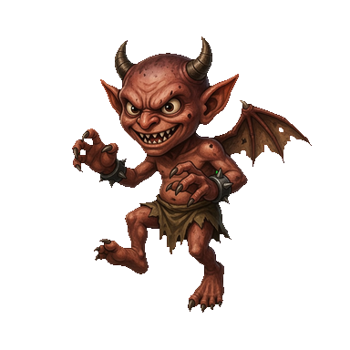
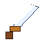
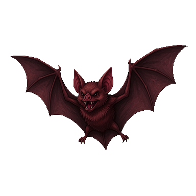
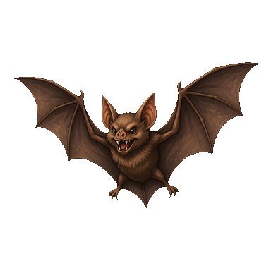

임프
#enemy_0003
변경
최대 HP64→300+236
공격12→28+16
경험치5→40+35
드롭 아이템없음→동검 (5%)
데이터베이스 창의 기존 「AI 어시스턴트」 단추가 이 오버레이를 엽니다. 지시 → 실행 → 바뀐 레코드마다 카드 한 장. 아래는 실제 편집기 스크린샷 위에 합성한 검토 상태입니다. 수치 사례는 실측 사건 그대로입니다 — tune_enemy가 몬스터 HP를 64→300으로 바꿨는데 화면엔 아무 흔적이 없었다(2026-09-03 위키).
몬스터들을 중반 난이도에 맞춰 조정하고 보상도 손봐줘




지금 적용 후임프와 동굴 박쥐를 중반 파티(레벨 12~15) 기준으로 올리고, 잡을 이유가 생기도록 경험치와 드롭을 붙였습니다. 드롭용 「동검」은 새로 만들었고, 박쥐는 상위종 배틀러로 교체했습니다. 참조가 없는 「독 안개」는 정리를 제안합니다.
before → after + 수치 델타 배지. 재료는 buildChangeLedger가 이미 만들던 것 — DB 바만 안 쓰고 있었다.captureProposalBase → applyProposedProject 커밋 게이트. 「적용 5건」을 누르기 전엔 프로젝트가 안 바뀐다.오버레이는 상태 셋을 오간다. 실행 중에도 지금 무슨 툴이 도는지가 카드 자리에서 보인다 — 지금 바의 400ms 폴링 감사 요약을 그대로 흘려 넣으면 된다.
databaseAiSuggestions 그대로 — 탭·선택 레코드 기준.몬스터들을 중반 난이도에…
get_database_records몬스터 125건 조회tune_enemy임프 · HP/공격/경험치upsert_item동검 만드는 중…| 축 | 결정 | 근거·재료 |
|---|---|---|
| 표면 | DB 창 안 오버레이. 기존 헤더 「AI 어시스턴트」 토글이 연다 | 3층 모달의 Escape 스택 회피 (현행 바도 stopPropagation 전력) |
| diff | 턴 전후 프로젝트 스냅샷 → buildChangeLedger → 레코드 id 로 그룹 | changeLedger.ts databaseEntries — DB 20개 영역 필드 diff 이미 존재 |
| 그림 | 몬스터=배틀러, 액터=얼굴, 아이템·스킬=아이콘. 그림 필드가 바뀌면 지금/적용 후 두 장 | battlerIdleAnimationUrl, faceset crop, 아이콘 시트 — 전부 기존 렌더러 |
| 적용 | 검토 후 적용 (전체 단위). 카드별 부분 적용은 v2 — 참조 무결성(적 드롭 ↔ 새 아이템)이 얽힌다 | captureProposalBase / applyProposedProject (데크와 동일 게이트) |
| 엔진 | 1차는 현행 브리지(구 세션) 유지. Pi 이관은 별도 — Pi 병합기가 DB 는 신규 레코드만 얹음 | mapBundle.ts createdDatabaseEntries |
| 파일 | 신규 databaseAiReview.ts + databaseAiBar.ts 런처 축소 + ai-bar.css(래칫) + 테스트·위키 | test/databaseAiBar.test.ts 개편, e2e qa-db-ai-dock.spec.ts |